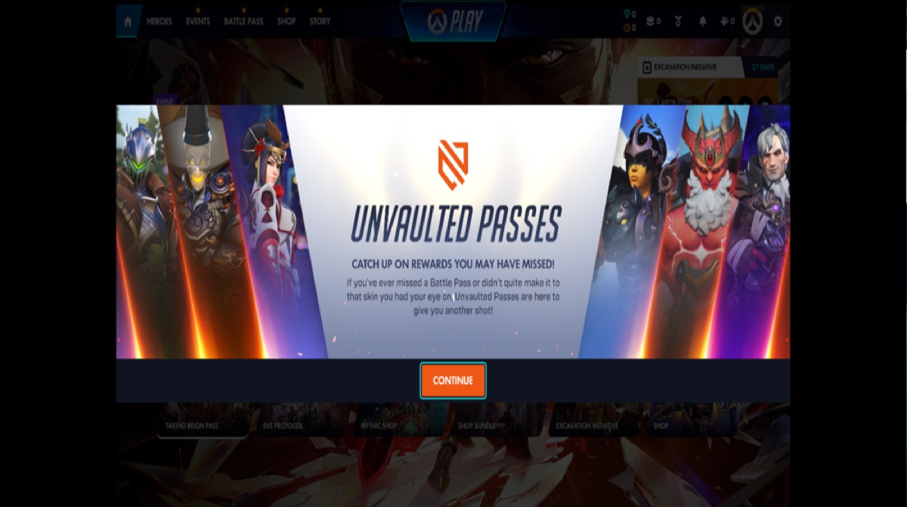

Soju is a free, open-source app that installs the official Windows game launchers on Apple Silicon Macs.
Overwatch 2 on Mac
Runs in Soju
Reached the main menu signed in and online on an M4 Pro with macOS 26.5, drawn with D3DMetal (Apple's Game Porting Toolkit). It needs Apple's AMD and NVIDIA driver shims (atidxx64.dll, nvapi64.dll) from the toolkit; without them it stops at start with "General Error (0xE0010110)". soju update adds them. Blizzard asks for a phone number on the Battle.net account before the free install. A match was not played in this check.


Linux (Proton) reference: 755 of 870 player reports from the last two years say it runs (ProtonDB, as of 2026-11-02, ODbL).
A Mac player reported it running through Highball (3/5) (M5 Pro 2026-10-01); not verified by Highball's maintainer. Not run in Soju yet; Soju's engines differ, so results can too. Their notes: A player on an M5 Pro reports it plays flawlessly on the Wine 11 engine (highball#232), and the recipe makes Play offer that engine. On the Wine 11 engine (x64-crossover26.3-r12) the game opens and shows Blizzard's Battle.net account link screen, a QR code and a code to enter at blizzard.com/link, which a Steam player sees on a first start. The account was not linked here, so nothing past that screen was played. On…
Mac data: Highball database (CC0).
| Launcher | Battle.net |
|---|---|
| Status | Runs in Soju |
| Date | Run on 2026-11-11, M4 Pro with macOS 26.5 |
How to try it with Soju
brew install BCD1210/soju/soju
soju install # choose Battle.net
soju battlenet # sign in, install the game, press PlayOr download the Soju app and add Battle.net under Platforms. Needs an Apple Silicon Mac (M1 or newer) and macOS 14 or later.
Tried it? Tell us in #compatibility on Discord or send a compatibility report and this page gets updated.
Questions
Does Overwatch 2 run on an Apple Silicon Mac?
Runs in Soju. Reached the main menu signed in and online on an M4 Pro with macOS 26.5, drawn with D3DMetal (Apple's Game Porting Toolkit). It needs Apple's AMD and NVIDIA driver shims (atidxx64.dll, nvapi64.dll) from the toolkit; without them it stops at start with "General Error (0xE0010110)". soju update adds them. Blizzard asks for a phone number on the Battle.net account before the free install. A match was not played in this check.
How do I install Overwatch 2 on a Mac?
Install the Windows Battle.net with Soju, a free open-source app, sign in, then install the game and press Play.